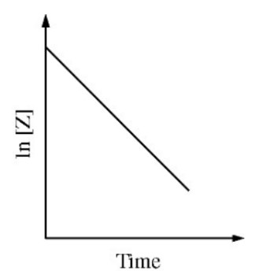

Consider the reaction represented by the equation \(\ce{2X + 2Z -> X2Z2}\). During a reaction in which a large
excess of reactant \(\ce{X}\) was present, the concentration of reaction \(\ce{Z}\) was monitored over time.
A plot of the natural logarithm of the concentration of \(\ce{Z}\) versus time is shown in the figure above. The order
of the reaction with respect to reactant \(\ce{Z}\) is
If the plot of the natural logarithm of a reactant concentration versus time is linear, the reaction is first order.
If you can do a bit of calculus, you can integrate the rate equation for first order to check:
$$ \text{rate} = k[\ce{Z}]^1 \tag*{first-order rate equation}$$
$$ \frac{dZ}{dt} = -k[\ce{Z}] $$
$$ \frac{1}{\ce{Z}} dZ = -k dt $$
$$ \int\frac{1}{\ce{Z}} dZ = \int-k dt $$
$$ \ln[\ce{Z}]=-kt+C $$
At time 0, \(C=\ln[\ce{Z}]_0\)
$$ \ln[\ce{Z}]=-kt+\ln[\ce{Z}]_0 $$
This is the line of \(\ln[\ce{Z}]\) versus \(t\) with slope \(-k\).